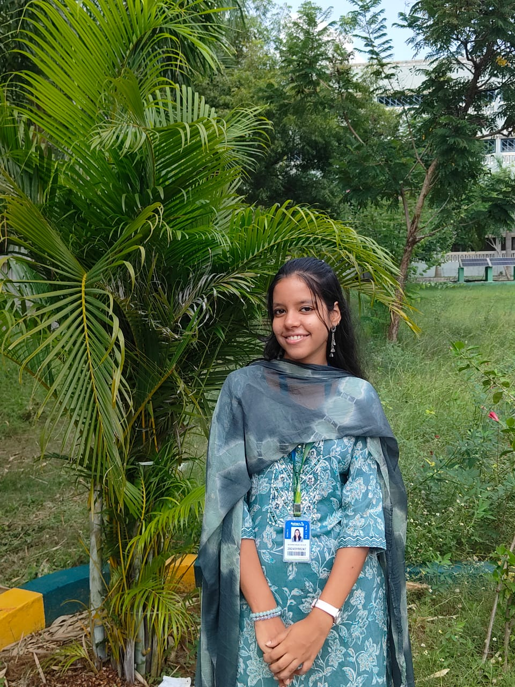
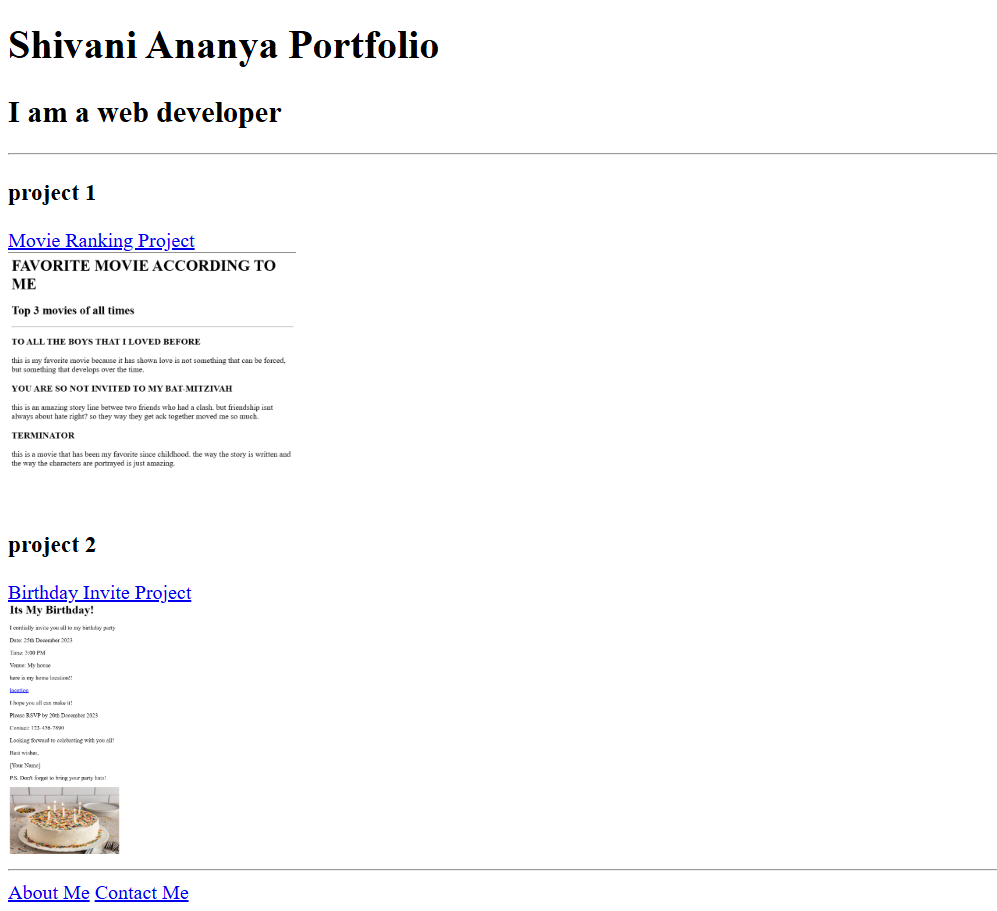

My Resume
Name: Shivani Ananya K.P
Contact Information
Click here for contact informationIntroduction
Passionate and proactive Computer Science student with a strong foundation in programming, leadership, and problem-solving. Eager to apply technical expertise in C, Python, and Excel, along with critical thinking skills, to contribute to innovative projects in python, HTML, CSS., Committed to continuous learning and delivering impactful solutions
Skills
- programming laguages: C, Python.,
- Data Structures and Algorithms
- Web Development: HTML, CSS
- Tools: Excel
- Softskills: Leadership, Communication, Critical Thinking, Logical Reasoning
- Languages: Tamil, English, Hindi
Education
- Bachelor of Technology in Computer Science and Engineering, 2024-2028 (Sri Sairam Institute of Technology)
- Higher Secondary Schooling, 2024 (Sri Sankara Vidyalaya MHSS)
- Secondary Schooling, 2022 (NSN Memorial Senior Secondary school)
- Primary Education, 2016 (SBOA School & junior college, Anna Nagar)
Projects
- reference image: 
- source link (github): github
- reference image:

- source link (github): github
- source link (github): python project 1
- source link (github): python project 2
- source link (github): python project 3
- source link (github): python project 4
HTML project: portfolio project
CSS project - motivational meme project
Python Projects:
- student database management project
- Quiz game project
- library management project
- sales data analysis using python pandas
Certifications
- C program learning (linkedin learning platform)
- C program debbuging (linkedin learning)
- datastructure in python (linkedin learning)
- joy of computing : Python (NPTEL)
- Web development course : (HTML, CSS, Javascript, React.js, node,js) (UDEMY) (currently learning)
- Microsoft Excel (linkedin learning)
- Soft skills (Linkedin learning, NPTEL)
- Work relationship management (linkedin learning)
Extra-curricular and Leadership
- Active participation in tech clubs, hackathons, and leadership roles within student organizations.
- Strong advocate for teamwork and innovation in technology-driven projects
- Organized and led workshops on programming languagest.
- leadership exposure in various platforms, engaging in leading an entire team with motiation and dedication
- Engaged in community service and outreach programs to promote Nation service scheme (NSS).
personal philosophy
“Learning is a journey, not a destination.” Embracing challenges and opportunities to continuously evolve and make an impact